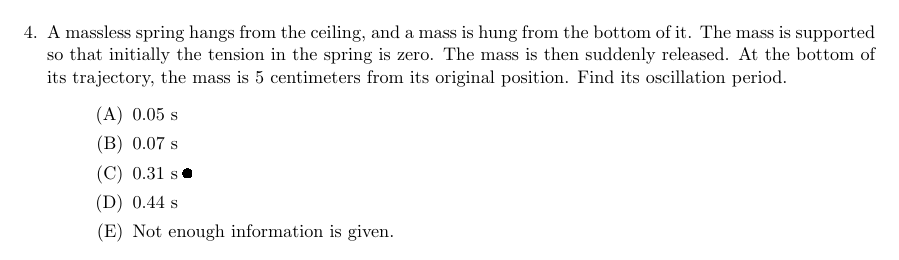

andrew kim / projects / screen solver
a python tool, run from global hotkeys, that reads a multiple-choice question off the screen and marks the answer. it screenshots whichever monitor the cursor is on, reads the text with easyocr, asks gemini for the exact text of the right choice, finds that choice back on the screen, and draws a small dot next to it. another hotkey saves a screen of notes as background context for the next question.
it's basically a cheating tool. i made it to see if it'd work, and to learn ocr, the gemini api, and drawing over other windows. i've never used it on an actual test.

Neither CUDA nor MPS are available - defaulting to CPU. Note: This module is much faster with a GPU.
ready. ctrl+shift+1 flash, ctrl+shift+2 pro, ctrl+shift+x save context, ctrl+shift+q quit
gemini: 0.31
match: 0.31 (1.50)matching the answer to the screen
gemini replies with the text of the answer, but i can't just search the screen for that text.
ocr output is messy. spacing is off, 0 and o get swapped, and symbols
come out wrong. so the tool scores gemini's answer against every text box easyocr found,
using a similarity ratio plus a bonus when one string contains the other, and takes the best match
over a threshold. then it turns that box's corner coordinates back into a point on the right monitor
and drops the dot there.
best_box = None
best_score = 0.0
for box in boxes:
box_text = box[1].lower().strip()
score = difflib.SequenceMatcher(None, answer, box_text).ratio()
if (box_text in answer or answer in box_text) and len(box_text) > 3:
score += 0.5
if score > best_score:
best_score = score
best_box = box
if best_box and best_score > 0.4:
print(f"match: {best_box[1]} ({best_score:.2f})")
corners = best_box[0]
dot_x = int(corners[1][0]) + monitor["left"] + 15
dot_y = int((corners[1][1] + corners[2][1]) / 2) + monitor["top"]
show_dot(dot_x, dot_y)drawing the dot
the dot is a tiny always-on-top tkinter window with no border. its background is white, and white is set as the transparent color, so only the black circle shows. it stays on top for four seconds and then closes itself.
def show_dot(x, y):
root = tk.Tk()
root.overrideredirect(True)
root.attributes("-topmost", True, "-transparentcolor", "white")
root.config(bg="white")
size = 10
left = x
top = y - (size // 2)
root.geometry(f"{size}x{size}+{int(left)}+{int(top)}")
canvas = tk.Canvas(root, bg="white", highlightthickness=0)
canvas.pack(fill="both", expand=True)
canvas.create_oval(0, 0, size, size, fill="black", outline="black")
root.after(4000, root.destroy)
root.mainloop()download the code (2 kb zip)